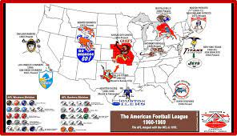
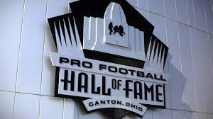
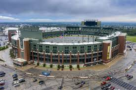

Bueno empesando con este gran deporte la (NACIONAL FOOTBALL LEAGUE) o "NFL" es un deporte con un poco mas de 102 años desde su creacion y lo que vengo a hacer yo es contar como empeso la nfl desde sus simientos hasta la actualidad.
Bueno para encontrar la fundacion de este deporte tenemos que remontarnos a el año de "1920" al comienzo se fundo con el nombre de "American professional football associacion" que para el año "1921" se cambiaria a su nombre actual pero ahy algo que les debo decir la nfl en sus inicios no contaba con 32 equpos contaba con muchos menos devido a que en ese entonces habia otra liga que trataba de tener el mismo impacto de la nfl y esa es la "AFL" esta era como ya dije una liga que trato de destronar a la nfl pero con el tiempo estas dos se terminarian uniendo para formar lo que hoy conocemos como la "nfl", cuando la afl y la nfl se unieron, de la liga afl se unieron solo 4 equipos que a dia de hoy estan vigentes y esos son los "cleaveland browns los indianapolis colts los 49ers y los giants" en el momento que se uniron a los equipos se les dividio en dos conferencias y esas son la "A" americana y la "N" nacional al comienzo las temporadas solo duraban 15 semanas no es como ahora que una temorada dura 18 semanas, hablando de el tema de posiciones en las mismas diviciones se reparten en los puntos cardinales a que me refiro pues lo que pasa es que en las mismas conferencias y dependiendo de donde este la ciudad de el equipo se le asignara a un grupo y son 4 grupos por coferencia la norte,sur,este y oeste y en cada una de estas juegan 4 equipos.

Ahora hablaremos de el tema de clasificacion pues el equipo que consiga mas victorias de cada grupo pasara directamente a play-offs antes de seguir por cada conferencia solo pasan 8 equipos a play-offs en total 16 ahora si, siguiendo con esto los mejores 4 equipos despues de los 4 primeros pasaran a play-offs y estos se acomodan de manera numerica de el 1 al 8 y este acomodo se dicta por las victorias de los equipos y ya despues de este acomodo se dictan los partidos y pongan atencion de como es "el n°1 juega contra el 5, el 2 contra el 6, el 3 contra el 7, y en 4 contra el 8", despues empesamos con la wildcard esta solo la juegan los equipos de el n°3 al 8, luego sigue el partido divisional en el que solo quedan 4 equipos por conferencia, despues esta el partido de campeonato de conferencia en este juego el ganador jugara el "SB" contra el otro equipo campeon de la coferencia rival y el super bowl es el partido de campeonato.
Hay un dato interesante el salon de la fama de la "NFL" tiene sede en canton ohio una ciudad que no tiene equipo la explicacion de por que esta ahi es facil ahy fue donde se firmo el comienzo de la nfl de hecho en la calle donde se encuentra se llama igual que uno de sus fundadores y ese es calle " George Halas".
Siguiendo con un poco de historia hablaremos de el estadio mas viejo al dia de hoy y ese es el "lambeau field" casa de los green bay packers, a dia de hoy es el unico estadio que no a cambiado de nombre nunca y tiene el nombre de el fundador de el equipo.
Ahora hablando de el Super bowl este juego sl comienzo era como un juegpo de exivision final entre los campeones de las dos conferencias la primera edicion fue jugada en el año de "1965" y lo gano los green bay packers de la mano de "barr star y el coach vince lombardi, ahora dare algunos datos sobre el super Bowl el sb con mas puntos fue el n°29 jugado entre chargers y 49ers el marcador final fue de "49-26" dando un total de 75 puntos, el sb en el que menos puntos se anotaron fue en el n°53 entre patriots y rams el marcador fue de "13-3" solo 16 puntos anotados, el sb mas disparejo entre equipos osea cuantos puntos le saco el ganador al perdedor fue el n°24 el partido se jugo entre 49ers y broncos el marcador termino con una paliza de los de san francisco terminando "55-10, hay un equipo que a llegado al sb 4 veces seguidas y perder los 4 ese equipo es los bufalo bills que jugaron los sb "25,26,27 y 28" de los cuales no ganaron ninguno ahora los mayores ganadores son los patrots y steelers con 6 victorias y los mayores perdedores son los broncos con 5 derrotas los vikings y los bills con 4, la ciudad con mas sedes de el super bowl es la de miami contando con un total de 11 sedes en total, bueno esto seria tolo lo que hice fue solo recabar los datos mas importantes, pero recuerden este deporte tiene una basta historia sin mas que decir yo me retiro.
"